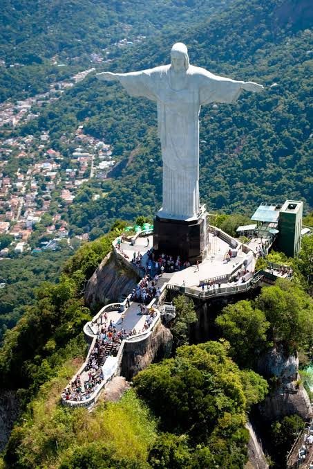
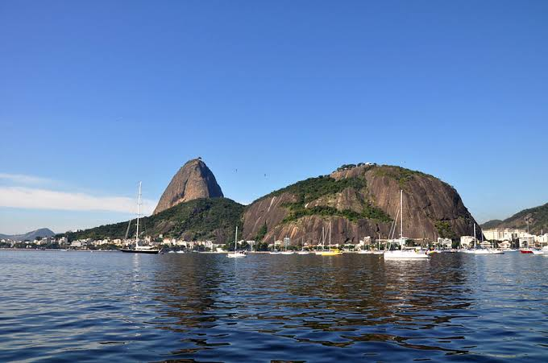
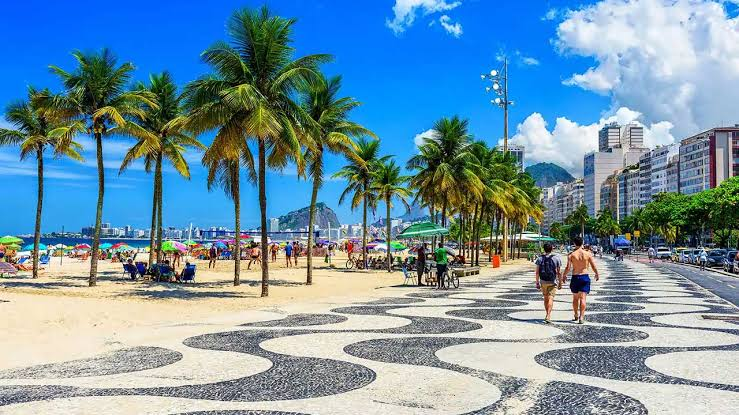
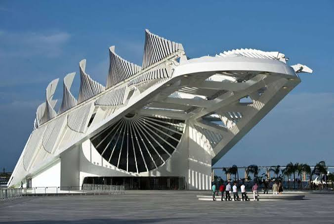

O Rio antes dos cartões-postais
A história da cidade começa muito antes de seus monumentos turísticos. A Baía de Guanabara foi registrada por navegadores portugueses no início do século XVI e tornou-se cenário de disputas entre portugueses e franceses. Em 1º de março de 1565, Estácio de Sá fundou São Sebastião do Rio de Janeiro em uma área próxima ao Morro Cara de Cão e ao Pão de Açúcar. A expulsão definitiva dos franceses ocorreu em 1567, consolidando a ocupação portuguesa. A partir daí, a cidade cresceu e assumiu papéis cada vez mais importantes na história política, econômica e cultural do país. [R1][R2]

Cristo Redentor
O Cristo Redentor, no alto do Corcovado, é hoje uma das imagens mais reconhecidas do Rio de Janeiro. Seu significado, porém, vai além da atração turística. O monumento pertence a um período em que grandes obras urbanas e símbolos públicos passaram a representar a modernização e a projeção internacional da cidade.
A ideia de instalar uma grande imagem religiosa no Corcovado apareceu em diferentes momentos, mas ganhou forma concreta nas primeiras décadas do século XX. A obra envolveu profissionais de áreas distintas e foi inaugurada em 1931. Sua localização faz parte da força simbólica do conjunto: a figura não está isolada, mas integrada ao relevo, à floresta, à Baía de Guanabara e ao tecido urbano visto do alto.
Ao longo das décadas, fotografias, cinema, televisão, publicidade e turismo fizeram com que a imagem do monumento passasse a representar não apenas o Corcovado, mas o próprio Rio e, muitas vezes, o Brasil. É um exemplo claro de como um lugar pode adquirir novas funções simbólicas com o tempo.
Perceba que a paisagem é parte do monumento: a experiência depende tanto da escultura quanto da posição privilegiada no maciço do Corcovado.

Pão de Açúcar e a chegada do Bondinho
O Pão de Açúcar já fazia parte da paisagem muito antes do teleférico. A grande transformação ocorreu no início do século XX, quando o engenheiro Augusto Ferreira Ramos idealizou um sistema de transporte aéreo ligando a Praia Vermelha ao Morro da Urca e, depois, ao Pão de Açúcar. Para a época, era uma proposta de engenharia extremamente ousada. [R3]
O primeiro trecho foi inaugurado em 27 de outubro de 1912, ligando a Praia Vermelha ao Morro da Urca. O segundo trecho, entre o Morro da Urca e o Pão de Açúcar, foi inaugurado em janeiro de 1913. A nova infraestrutura transformou a subida em uma experiência acessível a um público muito maior e ajudou a consolidar o local como ponto de lazer, observação e turismo. [R3]
Nas décadas seguintes, sistemas e cabines foram modernizados, mas a lógica do passeio permaneceu: sair do nível da cidade e subir progressivamente até uma posição de onde o Rio pode ser visto como conjunto. Essa experiência une tecnologia, relevo e paisagem urbana.

Copacabana: da expansão urbana ao símbolo mundial
Copacabana nem sempre esteve integrada ao núcleo urbano do Rio. No fim do século XIX, a abertura do Túnel Velho e a chegada das linhas de bonde facilitaram o acesso à região e incentivaram loteamentos e construções. O transporte foi fundamental para que o bairro passasse de uma área relativamente afastada a uma nova frente de expansão urbana. [R4]
A Avenida Atlântica foi inaugurada em 1906 durante a administração de Pereira Passos e depois ampliada. Com o passar do tempo, hotéis, edifícios residenciais, comércio e espaços de lazer passaram a definir a paisagem. Copacabana ganhou a imagem de bairro cosmopolita e se tornou uma vitrine da vida urbana carioca do século XX. [R4]
O famoso calçadão de pedras portuguesas e a extensa faixa de areia reforçaram essa identidade visual. Hoje, observar Copacabana é perceber a sobreposição entre natureza e urbanização: mar, avenida, prédios, montanhas, turismo e vida cotidiana ocupam o mesmo cenário.

Escadaria Selarón: quando a arte muda um caminho
Entre a Lapa e Santa Teresa, uma escadaria urbana comum foi transformada ao longo de anos pela intervenção artística de Jorge Selarón. Degraus e paredes receberam azulejos de inúmeras cores e procedências, formando uma obra que cresceu de maneira contínua e ficou conhecida internacionalmente.
O caso é interessante porque a escadaria não nasceu como monumento planejado. Ela ganhou valor turístico e cultural por meio de uma transformação gradual do espaço cotidiano. A circulação de moradores, visitantes e fotógrafos passou a fazer parte da própria vida da obra.
A parada mostra que patrimônio cultural não precisa ser apenas colonial ou antigo. Uma intervenção artística contemporânea pode adquirir importância quando estabelece uma relação forte com a cidade e com a memória de quem a utiliza.

Museu do Amanhã e a nova paisagem portuária
Inaugurado em dezembro de 2015, o Museu do Amanhã surgiu em um período de grande transformação da zona portuária carioca. Sua arquitetura de forte presença visual criou um novo marco à beira da Baía de Guanabara e passou a atrair visitantes para uma área historicamente ligada ao porto e a diferentes grupos sociais. [R5]
A proposta do museu se diferencia de um espaço dedicado apenas à guarda de objetos antigos. Sua exposição principal foi organizada em torno de perguntas sobre origem, identidade, presente e futuro: de onde viemos, quem somos, onde estamos, para onde vamos e como queremos seguir. [R6]
Por isso, o Museu do Amanhã fecha esta rota de maneira simbólica. Depois de visitar lugares ligados à fundação, à modernização, ao turismo e à arte urbana, o percurso termina em um espaço que usa ciência e história para pensar escolhas futuras.
Fim da rota carioca.
O Rio dos cartões-postais é resultado de séculos de disputas, obras, circulação, cultura e formas de representar a cidade. Agora compare essa história com outra região brasileira.